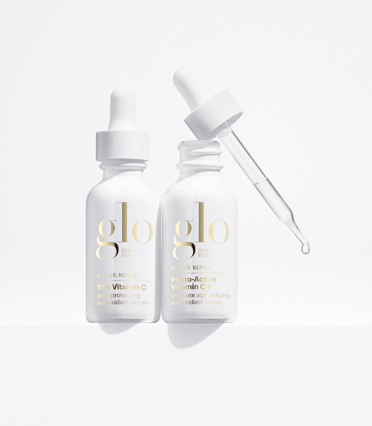

There are more than 300 species of the aloe plant, but Aloe barbadensis (aka aloe vera) is the best known and is prized in the health and beauty worlds for its healing properties.The spiky succulent plant grows naturally in dry, tropical climates in Africa, Asia, Europe, and the southern and western parts of the United States.Many centuries ago, people realized the plant had more to offer than just being nice to look at. The gel and juice found inside aloe vera became a popular herbal remedy that was used to help treat everything from skin issues to digestive problems.Let’s take a look at the history of aloe vera and its potential benefits.

Are skin care product safe?!
Cosmetics—makeup, creams, fragrances—have been around for thousands of years. Ancient Egyptian and Roman women famously caked on lead-based foundation. (Lead, a metal, can cause nerve, muscle and organ damage.) But surely lead-laden cosmetics have been phased out along with lead-lined water pipes, right? Not necessarily.
Today, the U.S. Food and Drug Administration (FDA) oversees the multi-billion-dollar-a-year cosmetics industry but it lacks the power to approve products or ingredients before they hit store shelves, even though their contents have been shown to enter the body.
According to the FDA, a cosmetic is anything used for "cleansing, beautifying, promoting attractiveness or altering the appearance." An average U.S. consumer uses about 10 cosmetic products every day, including makeup, soap, shampoo, lotion, hair gel and cologne, says Lisa Archer, the national coordinator for The Campaign for Safe Cosmetics (CSC), a nonprofit advocacy group based in San Francisco and financed in part by the Breast Cancer Fund, a nonprofit organization. As a result, she says, people are exposed to roughly 126 different chemicals daily, many of which haven't been thoroughly tested.
"We're operating in a vacuum in terms of safety," Archer says. "The FDA doesn't even define what 'safe' is, so it's totally up to the discretion of cosmetic companies."
How to make pancakes?
A pancake (or hotcake, griddlecake, or flapjack) is a flat cake, often thin and round, prepared from a starch-based batter that may contain eggs, milk and butter and cooked on a hot surface such as a griddle or frying pan, often frying with oil or butter. Archaeological evidence suggests that pancakes were probably the earliest and most widespread cereal food eaten in prehistoric societies.
The pancake's shape and structure varies worldwide. In Britain, pancakes are often unleavened and resemble a crêpe. In North America, a leavening agent is used (typically baking powder) creating a thick fluffy pancake. A crêpe is a thin Breton pancake of French origin cooked on one or both sides in a special pan or crepe maker to achieve a lacelike network of fine bubbles. A well-known variation originating from southeast Europe is a palačinke, a thin moist pancake fried on both sides and filled with jam, cheese cream, chocolate, or ground walnuts, but many other fillings—sweet or savoury—can also be used.
How important is fitness for your overall health?
Physical fitness is a state of health and well-being and, more specifically, the ability to perform aspects of sports, occupations and daily activities. Physical fitness is generally achieved through proper nutrition, moderate-vigorous physical exercise, and sufficient rest.
Before the industrial revolution, fitness was defined as the capacity to carry out the day’s activities without undue fatigue. However, with automation and changes in lifestyles physical fitness is now considered a measure of the body's ability to function efficiently and effectively in work and leisure activities, to be healthy, to resist hypokinetic diseases, and to meet emergency situations.[4]
Physical activity or exercise can improve your health and reduce the risk of developing several diseases like type 2 diabetes, cancer and cardiovascular disease. Physical activity and exercise can have immediate and long-term health benefits. Most importantly, regular activity can improve your quality of life. A minimum of 30 minutes a day can allow you to enjoy these benefits.